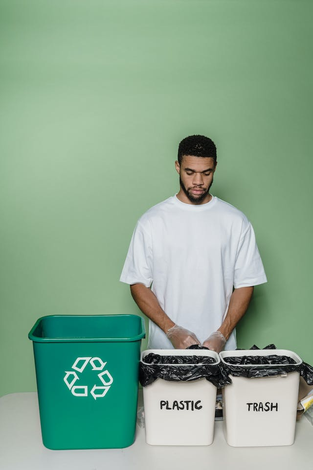

Recycling is not just a buzzword; it's a vital component of a sustainable future. By processing
materials to create new products, we reduce the need for raw resources and curb the energy-intensive production processes.
From paper and plastic to electronics, recycling is the bridge between waste and a renewed lifecycle.

- Community Swap Events:
Organize local swap events where community members can exchange items they no longer need. This promotes a culture
of reuse within the community, allowing items to find new homes instead of being discarded.
- Repair Cafés:
Establish repair cafés where skilled individuals help repair broken items. From electronics to clothing, giving items
a second chance through repair not only reduces waste but also fosters a sense of community collaboration.
- Upcycling Workshops:
Conduct workshops that teach people how to upcycle old or unused items into new, functional products. This empowers
individuals to see the creative potential in items that might otherwise be discarded.
- Online Recycle Platforms:
Create or support online platforms where people can give away or sell items they no longer need. This expands the reach
of reuse beyond local communities and encourages a global culture of sharing resources.
- School Programs:
Integrate reuse education into school curricula. Teach students about the environmental impact of waste and empower them
with the knowledge and skills to embrace reuse as a lifestyle.
- Collaboration with Industries:
Partner with industries to explore ways they can integrate reuse into their production processes. This could involve using
recycled materials or designing products with modular components that can be easily reused in different contexts.
 Recycle
Recycle